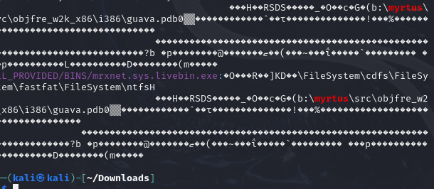

The First Strike on Iran’s Nuclear Program Wasn’t a Bomb — It Was Code
Today, Donald Trump etched his name into history.
The long-time dream of neocons like John Bolton to finally bomb Iran’s nuclear program — became reality.
Even John McCain, had he been alive, might’ve grinned.
Even the old Bush-era warhawks wouldn’t have believed it if you told them:
It wouldn’t be Bush, biden or Obama — but Trump who pulled the trigger.
But neither the U.S. nor Israeli Air Force was the first to bomb Iran’s nuclear program.
The first strike came from a piece of malware called Stuxnet — the worm that kicked off the era of cyberwarfare.
There were other variants too, like Fanny, but Stuxnet is the one that has to be named. Period.
Somewhere deep in Stuxnet’s code, its creators left a easter egg deliberately. In this post, I’ll break down that easter egg and how you can uncover it yourself.
The experts already know what I’m talking about.
But this one’s for the amateurs and people like me
📖 Flashback: How Code Replaced Cruise Missiles
Let’s rewind.
After the WMD fiasco in Iraq and the embarrassing intelligence failure, another full-scale invasion was off the table.
That’s when Operation Olympic Games was born — a top-secret joint op between the NSA, Mossad, and possibly Unit 8200.
Its child? Stuxnet — the world’s first digital precision weapon.
No jets. No bombs.
Just code that spun Iran’s centrifuges into oblivion without a sound.
Somewhere in Washington and Tel Aviv, a general must’ve whispered:
"Why invade when you can inject?"
This was Operation Olympic Games, cooked by Bush, Obama and Bibi.
And behind it — not just politicians, but shadow generals from the NSA and Israel’s Unit 8200.
People like:
-
General Keith Alexander (NSA)
-
Michael Hayden (former NSA/CIA)
-
James Cartwright (U.S. Strategic Command, tied to cyber operations)
They didn't just launch malware.
They launched a new type of Warefare.
🧠 A Worm That Made Hackers Out of All of Us
Stuxnet wasn’t just a virus — it was an awakening call for TechBros.
It’s the kind of code that pulled me and thousands of others into malware analysis and cybersecurity.
Every time I re-read Wired’s breakdowns, or hear it on Darknet Diaries, I feel flag-blasted and nerd-sniped by what this worm achieved.
It rewrote our idea of warfare.
It showed that programming could do what precision bombs couldn’t.
🥚 The Easter Egg Inside Stuxnet
Now, for the noobs and curious nerds — here’s how you find the easter egg hidden in Stuxnet’s guts.
If you’re an experienced malware analyst, you’ve probably seen it before. But for the rest of you just stepping into malware analysis this is the kind of thing that wakes you up at 2AM thinking, “These guys really did that.”
Inside the driver file of Stuxnet, the nerds (probably from Unit 8200 or the NSA) left a trail. Whether accidental or intentional — we’ll never know for sure. But it reads like a quiet signature in a warhead.
b:\myrtus\src\objfre_w2k_x86\i386\guava.pdb
That’s the project path hardcoded into the driver.

This is what they did before sending Stuxnet to Iran
Here’s why it matters:
-
Myrtus → Genus of the myrtle plant
-
In Hebrew, Hadassah means myrtle. That was Queen Esther’s original name.
-
In the bibe, Esther warned the king of a Persian plot to exterminate the Jews, and the Jews counter-struck — killing only their would-be killers.
That’s not just code. That’s messaging.
To add even more layers:
-
“MyRTUs” can be interpreted as “My Remote Terminal Units” which connects directly to PLCs, the very hardware Stuxnet was designed to hijack.
-
“Guava” might be nothing, or it might be a nod to the fruiting Myrtus genus , a botanical echo from Hebrew roots to Iran’s nuclear rotors.
Symantec, in their legendary dossier, cautioned readers not to jump to conclusions.
But let’s be honest coders that precise don’t leave random plant paths in compiled malware that took nation-state level ops to deploy.
⚠️ Disclaimer: Don’t try this unless you know what you’re doing. These are live malware samples — not toys. You mess around on a personal machine, you’re gonna get burned.
But if you're ready to dig:
Download the Stuxnet samples from malware archives
Run this command in that folder:
v1="myrtus\|WinCCConnect" grep --color --text --ignore-case --recursive "$v1" .If done right, you’ll see something like:
b:\myrtus\src\objfre_w2k_x86\i386\guava.pdb

That’s your easter egg
I didn’t mess with it myself not until I had the right setup and some basic RE hygiene.
So if you're not there yet, pause. No shame in learning slow.
Stuxnet ain’t going anywhere.
Special thanks to Jane for providing the sample that helped me study this easter egg firsthand.
She done a fantastic job documenting and analyzing Stuxnet. check out her work here.
Absolute respect and thanks again,Jane.
🕊️ Esther and the B-2: History Rhymed Again
Now here’s where it gets biblical — literally.
On Wednesday, June 18, Donald Trump received a classified intelligence briefing about Iran’s nuclear program. According to multiple reports, this was the moment the decision was made: the U.S. would strike Iranian targets that weekend.
The operation would be known as “Operation midnight Hammer.”
Sounds tactical, right?
But the timing? The timing was spiritual warfare 101.
Because that week aligned with the 23rd day of Sivan in the Hebrew calendar — and that day, for the Jewish people, carries nuclear symbolism of its own.
According to the Purim story, Haman advisor to the Persian king Achashverosh, plotted to exterminate all the Jews in the empire:
"To destroy, kill and annihilate all the Jews, from young to old, infants and women, in one day."
But the plan didn’t go through.
Instead, on the 23rd of Sivan, King Achashverosh persuaded by Queen Esther and Mordechai signed a counter-decree:
The Jews were authorized to rise up and kill those who planned to kill them.
They struck first. They survived. Persia bled.
Iran is modern-day Persia.
Haman’s genocidal ambition lives on in every IRGC chant about “wiping Israel off the map.”
You think Israel and Americans didn’t notice? From the timing to the codename, every Israeli move is often calibrated to create not just destruction, but psychological dread. Through history, these naming have been used to apply political pressure or inflict terror on their enemies, echoing ancient stories in modern warzones.
🧠 Final Thoughts
While I’m mostly a cyber guy, I couldn’t help but notice what Caine said during the briefing that Cyber Command was involved. We don’t know what that means exactly.
It’s all classified, they say.
But if CyberCom had a hand in shaping the battlefield, maybe jamming comms, spoofing sensors, or running disruption behind the scenes — you already know I’m gonna be hyped the day those details leak.
Right now, the visible part of the strike package was kinetic bombs, warplanes, blast radius.
And let’s not forget:
Before all this before Operation midnight Hammer, before June 18, before the B-2s there was Stuxnet.
A worm that spun rotors until they shattered.
A piece of code that carried a message, a signature, and an ideological payload.
If you followed along, you saw the easter egg buried in the driver file — myrtus\guava.pdb hatsoff to you
What matters now is this:
Trump bombed.
And whether you support it or not, the consequences will ripple across Tehran, Tel Aviv, DC, and beyond.
I hope they sort this matter soon.
Until then,
See you guys !
— HolyStrike